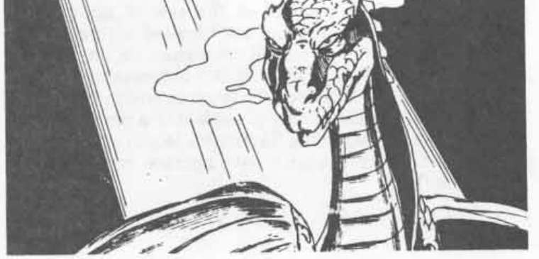

灰鹰龙 · Dragon, Greyhawk
灰鹰龙 Dragon, Greyhawk
 |
|
灰鹰龙喜欢人类的陪伴，更喜欢住在城市中。它们拥有高度的魔法能力和智慧。
外貌：虽然比许多同类小得多，灰鹰龙仍拥有其他龙类典型的力量和强健体魄。它的鳞片呈浓郁的金属灰色，仿佛刷过的钢铁；从龙的腹面直到尾部，颜色逐渐变深，几乎像发蓝的枪铁色。它翅膀的翼膜具有精细丝绸般的光泽。
战斗：灰鹰龙本质上是和平的生物，只要可能就会避开战斗。然而，如果冲突不可避免，它会以极高的智慧和致命性战斗。除了爪／爪／咬的常规攻击，它每天还可以三次喷出剧毒气体（对毒素豁免时受到 -4 处罚，否则死亡）。它喷出的气体最多可以填满边长 30 英尺的立方体；不过，龙能够谨慎控制喷出的量。气体会迅速通过皮肤吸收，吸入它和让它接触皮肤一样致命。把所有暴露的皮肤涂上猪油或其他油脂，可以获得部分保护，因为这会减弱毒素的效果（豁免处罚降为 -2）。毒性持续时间很短——接触氧气两分钟后，气体就会变得惰性。
与进行物理攻击相比，龙更可能使用魔法。在极幼年时，它拥有 4 个一级法术。此后，每达到一个新的年龄阶段，它都会获得 4 个逐渐提高等级的法术（因此到了老年，它拥有每个等级各 4 个法术，范围从一级到六级）。从出生起，它每天还可以施展五次改变自身。与普通魔法使用者法术不同，这项能力的持续时间没有上限。
灰鹰龙免疫一级至四级魔法使用者法术。对于所有其他魔法效果，它拥有 75% 的魔法抗性。它可以使用魔法使用者职业允许使用的所有魔法物品。
栖息地／社会：由于喜爱并着迷于人类，灰鹰龙通常会变形为人类形态生活。它偏爱的居所是一座大城市，在那里通常拥有一所大房子，并且经常成为诗歌朗诵、讨论小组等艺术和知识聚会的中心。以人类身份生活时，灰鹰龙往往是知识阶层中颇有名望的人，也是艺术的赞助者。它们绝不会泄露自己的真实本性。
食物通常是这种生物最大的问题：虽然它可以采取男人或女人的形态，但必须吃下足够食物来维持真正的体型。大约每两周，它就会消失在人们视线中，前往附近的荒野（在那里它可能声称拥有一座狩猎小屋）。它会在那里狩猎，以弥补自己在城市中被迫进行的节食（至少按龙的标准而言）。和其他龙一样，灰鹰龙是杂食动物，但偏爱鲜肉。它从不吃家养畜群，而是捕食野生动物，尤其是那些对人类有害的动物。
灰鹰龙是极其罕见的生物：即使最大的城市中，也可能只有一两条秘密生活着。虽然它们会采取严格的预防措施，防止真实身份被发现，但一条灰鹰龙能一眼认出另一条灰鹰龙。同一城市中的龙通常彼此友好，尽管它们通常不会主动寻求对方陪伴。然而，每隔十二年，龙会寻找配偶，通常来自另一座城市。找到配偶后，这对龙会退入荒野，在那里抚养一只后代。幼龙大约 24 个月大、能够独立觅食后，父母便分开并各自返回原来的生活。它们极少两次选择同一个配偶。
灰鹰龙会说自己的语言，以及大多数人类、半人类和类人生物的语言。只要它们愿意，就能在任何大型城镇或城市中找到。有人声称，城市中不超过五条灰鹰龙的名字被人知晓……不过没有人——尤其是这些龙本身——愿意或能够证实这一点。
生态位：灰鹰龙位于食物链顶端，没有天敌。在城市中，它们很少作为工匠工作，更喜欢像贤者一样充当信息收集者和传播者。